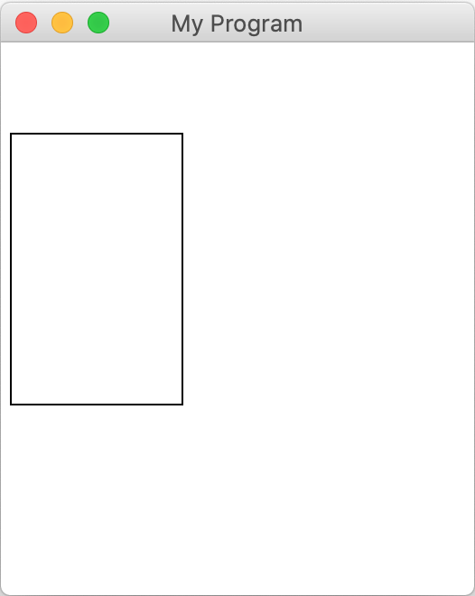
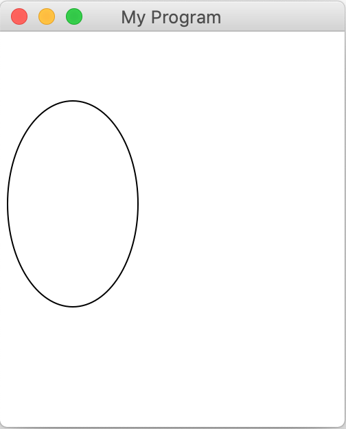
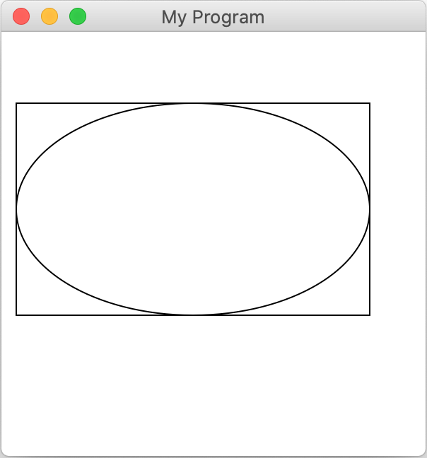
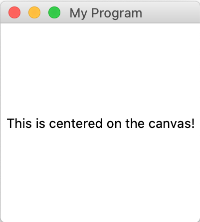
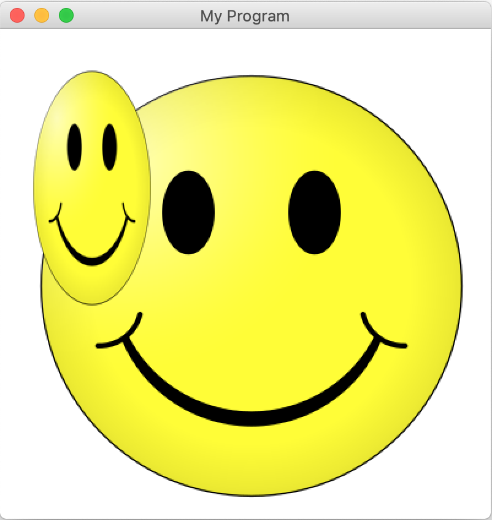
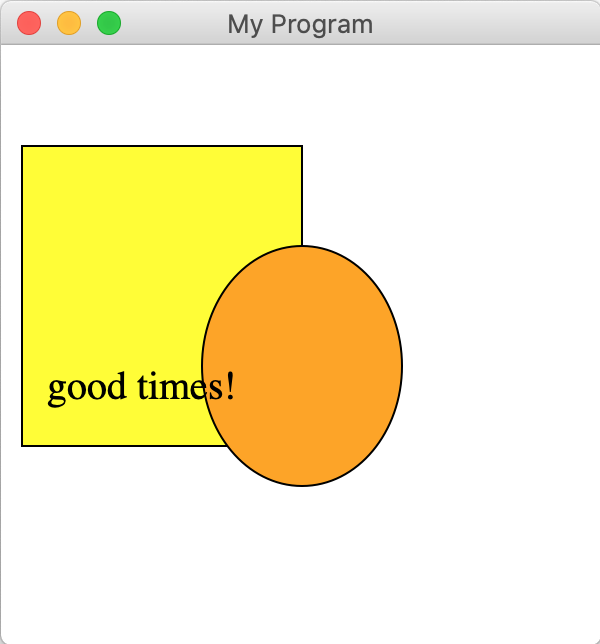
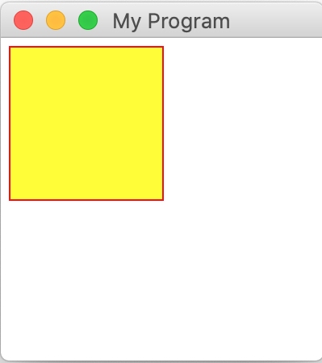

Graphics Reference
Create Graphical Objects
| Method | Description |
create_line(x1, y1, x2, y2) |
Creates a new line connecting (x1, y1) and (x2, y2). |
create_rectangle(x1, y1, x2, y2) |
Creates a new rectangle on the canvas the size of this bounding box and returns it. |
create_oval(x1, y1, x2, y2) |
Creates a new oval on the canvas contained within this bounding box and returns it. |
create_image(x, y, filepath)--OR-- create_image_with_size(x, y, |
Creates a new image on the canvas from the specified file, with top-left corner at (x, y). You can also specify the width and height. |
create_text(x, y, text) |
Creates text on the canvas with the specified contents, centered at (x, y). |
Work With Graphical Objects
| Method | Description |
get_width(obj) |
Returns the width of obj. |
get_height(obj) |
Returns the height of obj. |
get_left_x(obj) |
Returns the leftmost x coordinate of obj. |
get_top_y(obj) |
Returns the topmost y coordinate of obj. |
move(obj, dx, dy) |
Moves obj using the displacements dx and dy. |
moveto(obj, x, y) |
Sets the location of obj to the specified coordinates. |
set_outline_color(obj, color) |
Sets the outline color (if applicable) of obj. |
set_fill_color(obj, color) |
Sets the fill color (if applicable) of obj. |
set_font(obj, font, size) |
Sets the font and font size for the text object obj. |
delete(obj) |
Removes obj from the canvas. |
Canvas Information
| Method | Description |
get_canvas_width() |
Returns the width of the canvas. |
get_canvas_height() |
Returns the height of the canvas. |
One of the most common libraries to create graphics in Python is called Tk (short for "tkinter"). Tk is a powerful graphics library that should be automatically installed for Windows and Mac along with Python when you installed it. But some of the functions are hard to use. For this reason, we provide our own small graphics library that is built on top of Tk and makes it easier to use. However, it's not a replacement for Tk - it just adds new functions to make certain things like drawing text easier. You can always explore the full Tk library if you're interested in seeing what else you can do!
Importing
To use our graphics library, you must first import it at the top of your program, like this:
from graphics import Canvas
The Canvas
The drawing model for the graphics library is a "canvas" (much like a painting) where you are going to draw various shapes. The canvas is a grid of pixels that have x and y values. The coordinate (0, 0) is in the upper-left-hand corner of the canvas. The values of x increase as you move to the right. The values of y increase as you move down. In other words, you can think of the canvas as follows:

When we want to draw shapes on a canvas, we call functions on that canvas that “create” the shape we want to draw. These shapes then appear on the canvas. We will generally provide the code that creates the canvas for you, so all you need to worry about is adding shapes to that canvas. For the remainder of this handout, we will assume that a variable named canvas has already been created, and it represents the canvas that you’ll be drawing on. Usually this will be done with the following provided code:
canvas = Canvas() # create a new canvas
canvas.set_canvas_title("My Program") # sets the text in the window title bar
# now we can use our canvas here!
...
# call this at the end of the program to make sure the window shows properly
canvas.mainloop()
Below we provide a brief tour of some of the different shapes you can draw in a canvas as well as highlight a few of the options you have with regard to how those shapes look. For a complete list of functions, check out the link at the top of this page to the full reference documentation.
Drawing Lines
To draw lines on the canvas, use create_line and specify the coordinates for the start and end points of the line. For example, the following command would draw a line from location (10, 20) to (100, 50) on the canvas:
canvas.create_line(10, 20, 100, 50)
By default, all lines are drawn black.
Drawing Rectangles
To draw a rectangle on the canvas, use create_rectangle and specify the coordinates for the top left corner and bottom right corner of the rectangle. For example, the following command would draw a rectangle with upper left-hand corner at (5, 50) and lower right-hand corner at (100, 200) on the canvas:
canvas.create_rectangle(5, 50, 100, 200)
By default, all rectangles are drawn unfilled with black outlines. Here's what this code would draw on the canvas:

Drawing Ovals
To draw an oval on the canvas, use create_oval and specify the coordinates for the top left corner and bottom right corner of the bounding box containing the oval you would like to draw. In other words, the oval drawn will have its top, bottom, right, and left just touching the sides of the bounding box you specify. For example, the following command would draw the oval that fits within an imaginary rectangle with upper left-hand corner at (5, 50) and lower right-hand corner at (100, 200) on the canvas:
canvas.create_oval(5, 50, 100, 200)
By default, all ovals are drawn unfilled with black outlines. Here's what this code would draw on the canvas - note that we can think of this as an imaginary bounding box from (5, 50) to (100, 200), with an oval drawn inside it:

To make clear the notion of a bounding box, below we draw an oval and an outline rectangle, where both the oval and rectangle have the same bounding box coordinates:
canvas.create_rectangle(10, 50, 260, 200)
canvas.create_oval(10, 50, 260, 200)

Drawing Text
To draw text on the canvas, use create_text and specify the coordinate for the center of the text label. For example, the following command would add text to the canvas displaying "Hello, world!" centered at (50, 50):
canvas.create_text(50, 50, "Hello, world!")
Note that while other graphical objects typically use their upper-left corner as their position, text uses its center point. This is because often-times we wish to center text, such as in the middle of the screen. We can do this easily using the dimensions of the canvas:
canvas.create_text(canvas.get_canvas_width() / 2,
canvas.get_canvas_height() / 2,
"This is centered on the canvas!")
By default, all text is drawn in black in the system font. Here's what this code for drawing a centered label would draw on the canvas:

If you'd like, you can change the font of drawn text using set_font, like this:
label = canvas.create_text(100, 100, "Hello, world!")
canvas.set_font(label, "Times", 25)
Adding Images
Note: if images do not work in your program, and instead give an error, you may not have installed the library necessary for images to work. Make sure you followed the instructions in the installation guide under "Installing Graphics".
You can add image files to your canvas as well. To do this, use create_image (if you want the image to be the same size on the canvas as the image file) or create_image_with_size) (if you want the image to be another size you specify). Both require you to specify the x and y location of the upper-left corner of the image on the canvas, as well as the name of the image file. create_image_with_size also requires a width and a height that the image should be. Here's an example that adds a smiley-face image to the canvas with upper-left corner at (25, 30), assuming we have an image file named "smiley.jpg" in our PyCharm project:
canvas.create_image(25, 30, "smiley.png")
# or add with specific dimensions width = 100, height = 200
canvas.create_image_with_size(25, 30, 100, 200, "smiley.png")
Here's what this code would draw on the canvas - note that the larger smiley is the one from the create_image call, and the distorted one is the 100x200 smiley drawn with create_image_with_size:

One note about images is that they cannot be resized after you create them. (Note: smiley image from here)
Removing Objects From the Canvas
You can remove objects from the canvas using delete:
rect = canvas.create_rectangle(100, 200, 300, 400)
...
canvas.delete(rect)
Note that deleting an object is permanent - if you want to temporarily make an object hidden, for instance, use set_hidden. You can pass in either True or False to set an object to be hidden or visible:
rect = canvas.create_rectangle(100, 200, 300, 400)
canvas.set_hidden(rect, True) # No longer visible
...
canvas.set_hidden(rect, False) # visible again
Object Ordering
Objects are drawn on the canvas in the order in which they are created by your code. So, if you draw a red rectangle after a yellow circle, the red rectangle can potentially cover (occlude) part of the yellow circle. This is sometimes referred to as the z-order of the objects.
As an example, below, we first draw a yellow rectangle, then draw an orange oval (which partly overlaps the rectangle), and then some text (that is on top of both the rectangle and the oval).
rect = canvas.create_rectangle(10, 50, 150, 200)
canvas.set_fill_color(rect, 'yellow')
oval = canvas.create_oval(100, 100, 200, 220)
canvas.set_fill_color(oval, 'orange')
label = canvas.create_text(70, 170, 'good times!')
canvas.set_font(label, "Times", 20)

Getting Object Information
For all graphical objects, you can ask the canvas for information about them. For instance, you can get their dimensions via get_width and get_height:
rect = canvas.create_rectangle(0, 0, 50, 100)
print(canvas.get_width(rect)) # prints 50
print(canvas.get_height(rect)) # prints 100
You can also ask the canvas for information about their location. Specifically, you can get the leftmost x coordinate of the object, or the topmost y coordinate:
oval = canvas.create_oval(5, 10, 50, 100)
print(canvas.get_left_x(oval)) # prints 5
print(canvas.get_top_y(oval)) # prints 10
Note that for something like an oval, the dimensions and left corner are from the bounding box that contains it.
Updating Graphical Objects
There are several helpful functions you can use to update the state of different graphical objects.
Moving Objects
You can change the location of an object using moveto. You specify a new coordinate which will be the upper-left corner of the bounding box for the object (e.g. bounding box for an oval, bounding box for a line, etc.). Here's how we would move a rect to have upper-left corner at (25, 50):
rect = canvas.create_rectangle(100, 200, 300, 400)
canvas.moveto(rect, 25, 50)
You can also change the location of an object by specifying how much you would like to move it by, instead of specifying the new location. The move function lets you specify the change in x and the change in y for the object. For example, here's how we would move a rect 5 pixels to the right, and 10 pixels down:
rect = canvas.create_rectangle(100, 200, 300, 400)
canvas.move(rect, 5, 10)
Thus, rect's new top-left-corner coordinate would be (105, 210).
Coloring
You can change the colors of various objects, both their outline and their fill. Objects like rectangles and ovals have both - their outline is the border around the shape, and their fill is the inside of the shape. Lines have just a fill - it's the color of the line. Text also has just a fill - it's the color of the text. Images have neither a fill nor an outline. You can change the fill color for relevant objects using set_fill_color, and the outline color using set_outline_color. For instance, here's how we could make a rectangle with a red outline and yellow fill:
rect = canvas.create_rectangle(5, 5, 100, 100)
canvas.set_outline_color(rect, 'red')
canvas.set_fill_color(rect, 'yellow')
Here's what this would look like on the canvas:

If you pass in the empty string for the color, it sets the shape to have no fill or outline:
rect = canvas.create_rectangle(100, 200, 300, 400)
canvas.set_outline_color(rect, '') # no outline
canvas.set_fill_color(rect, 'yellow') # yellow fill
There are a ton of different colors available to use - for a complete list, check out this website.
Canvas Information
You can get the width and height of the canvas itself using get_canvas_width and get_canvas_height:
canvas_width = canvas.get_canvas_width()
canvas_height = canvas.get_canvas_height()
# Create centered text
label = canvas.create_text(canvas_width / 2, canvas_height / 2, "I'm centered!")